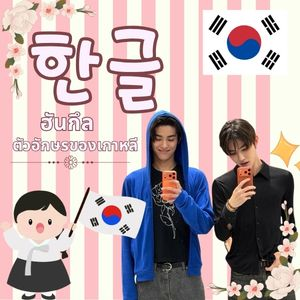

ตัวอักษรเกาหลี

ตัวอักษรเกาหลีเรียกว่า “ฮันกึล (한글)” เป็นระบบตัวอักษรที่ใช้เขียนภาษาเกาหลี ประกอบด้วยพยัญชนะและสระที่นำมารวมกันเป็นพยางค์ โดยพยัญชนะพื้นฐาน เช่น ㄱ (ก/ค), ㄴ (น), ㄷ (ด/ท), ㅁ (ม), ㅂ (บ/พ), ㅅ (ซ) และ ㅇ (อ/ง) ส่วนสระ เช่น ㅏ (อา), ㅓ (ออ), ㅗ (โอ), ㅜ (อู) และ ㅣ (อี) เมื่อนำมาประกอบกันจะเกิดเป็นคำ เช่น 한글 (ฮันกึล) หมายถึงตัวอักษรเกาหลี, 한국 (ฮันกุก) หมายถึงประเทศเกาหลี และ 안녕 (อันนยอง) หมายถึงสวัสดี ฮันกึลมีลักษณะเป็นระบบและเรียนรู้ได้ง่าย จึงถือเป็นเอกลักษณ์สำคัญของภาษาและวัฒนธรรมเกาหลี